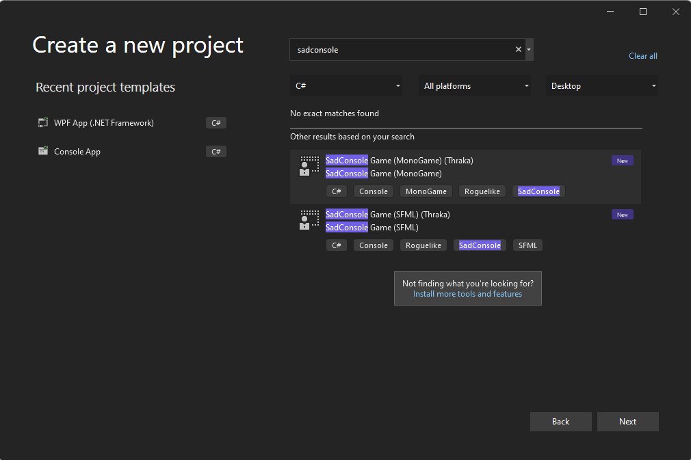

Create a new SadConsole .NET project with Visual Studio
This page describes how to create a new project based on SadConsole using .NET 8.0 and Visual Studio.
Before using Visual Studio, you'll need to install the SadConsole project templates. The first few sections of the Create a new SadConsole .NET project with the SadConsole templates. article describes how to do this. Follow those instructions and then come back to this article.
Prerequisites
During install, make sure that you select the .NET Core cross-platform development workload.
- If you have already installed Visual Studio, you can run the Visual Studio Installer that was added to your computer, and modify your installation to add the .NET Core cross-platform development workload.
Install the SadConsole templates with the dotnet command:
dotnet new install SadConsole.Templates. For more information, see Create a new SadConsole .NET project with the SadConsole templates
Create a new project
Start Visual Studio.
In the Create a new project dialog, type
sadconsoleinto the search box and select the SadConsole Game (MonoGame) project template.
The
SadConsole Game (MonoGame)template creates a SadConsole game that uses MonoGame and theSadConsole Game (SFML)template creates a game that uses SFML. MonoGame and SFML are the backend renderers for SadConsole. In general, the code you use for SadConsole doesn't care which rendering system you use. However, as your game progresses, which renderer you choose is very important. Currently, it's recommended that you use the MonoGame renderer as it has the following benefits:- Easier cross-platform targeting.
- Supports 3D rendering: models, scenes, etc.
- Built for .NET coding
SFML is cross-platform, but it takes more work on your side to get that working.
Press Next and then set the Project name to
SadConsoleGameand choose a location on your computer to save the project.
Congratulations, you have a new project! Press F5 to run the game:

Creating a project without a template
If you want to create a project without using the SadConsole templates, it's also pretty easy to do.
Create a new Console App with either C# or VB.NET. Don't create a Console App (.NET Framework) project!
Press Next and follow the wizard to set the name of the project to
SadConsoleGame.Set the Location of your project code, and then press Next. and then choose where you want to save your code.
Set the Framework to .NET 8.0 or later.
Make sure that Do not use top-level statements is unchecked unless you know what you're doing and can convert the code in the next section.
Press Create.
Next, add the NuGet SadConsole MonoGame renderer package to the project.
- In the Solution Explorer, right-click on the project and select Manage NuGet Packages. This will display the NuGet package manager.
- Search for SadConsole and install the
SadConsole.Host.MonoGamepackage. - Search for MonoGame.Framework and install the
MonoGame.Framework.DesktopGLpackage.
Congratulations, you have all of the required libraries to start creating a SadConsole game!
Configure the startup code
You need perform a minor modification to the project file, and then change the startup code that was automatically generated for your project.
Project file
Open the project file, which is probably named SadConsoleGame.csproj. Replace the content with the following snippet:
<Project Sdk="Microsoft.NET.Sdk">
<PropertyGroup>
<OutputType>WinExe</OutputType>
<TargetFramework>net8.0</TargetFramework>
<ImplicitUsings>enable</ImplicitUsings>
<Nullable>enable</Nullable>
<RootNamespace>SadConsoleGame</RootNamespace>
</PropertyGroup>
<ItemGroup>
<Using Include="SadConsole" />
<Using Include="SadRogue.Primitives" />
<Using Include="SadConsole.Console" Alias="Console" />
</ItemGroup>
<ItemGroup>
<PackageReference Include="MonoGame.Framework.DesktopGL" Version="3.8.3" />
<PackageReference Include="SadConsole.Host.MonoGame" Version="10.6.0" />
<PackageReference Include="SadConsole.Extended" Version="10.6.0" />
</ItemGroup>
</Project>
Root screen
The startup code will designate a startup object, known as the "root screen." That object is a ScreenObject type, or any type derived from ScreenObject such as ScreenSurface. Create a new root screen:
In the Solution Explorer window, right-click on the project and select Add > Class.
Name the class
RootScreenand create it. The code editor for the class is opened.Replace the generated code with the following:
class RootScreen : ScreenObject { private ScreenSurface _mainSurface; public RootScreen() { // Create a surface that's the same size as the screen. _mainSurface = new ScreenSurface(Game.Instance.ScreenCellsX, Game.Instance.ScreenCellsY); // Fill the surface with random characters and colors _mainSurface.FillWithRandomGarbage(_mainSurface.Font); // Create a rectangle box that has a violet foreground and black background. // Characters are reset to 0 and mirroring is set to none. _mainSurface.Fill(new Rectangle(3, 3, 23, 3), Color.Violet, Color.Black, 0, Mirror.None); // Print some text at (4, 4) using the foreground and background already there (violet and black) _mainSurface.Print(4, 4, "Hello from SadConsole"); // Add _mainSurface as a child object of this one. This object, RootScreen, is a simple object // and doesn't display anything itself. Since _mainSurface is going to be a child of it, _mainSurface // will be displayed when RootScreen is either the starting screen or somewhere in that collection of objects. Children.Add(_mainSurface); } }
Program startup code
- In the Solution Explorer window, double-click the Program.cs. This opens the code editor.
- Replace the code with the following:
using SadConsole.Configuration;
Settings.WindowTitle = "My SadConsole Game";
Builder
.GetBuilder()
.SetWindowSizeInCells(90, 30)
.SetStartingScreen<RootScreen>()
.IsStartingScreenFocused(true)
.ConfigureFonts(true)
.Run();
Press the F5 key to run your SadConsole program. You should be presented with the following screen:
Next steps
Now that you have the project created and working, check out the Get Started tutorial series.